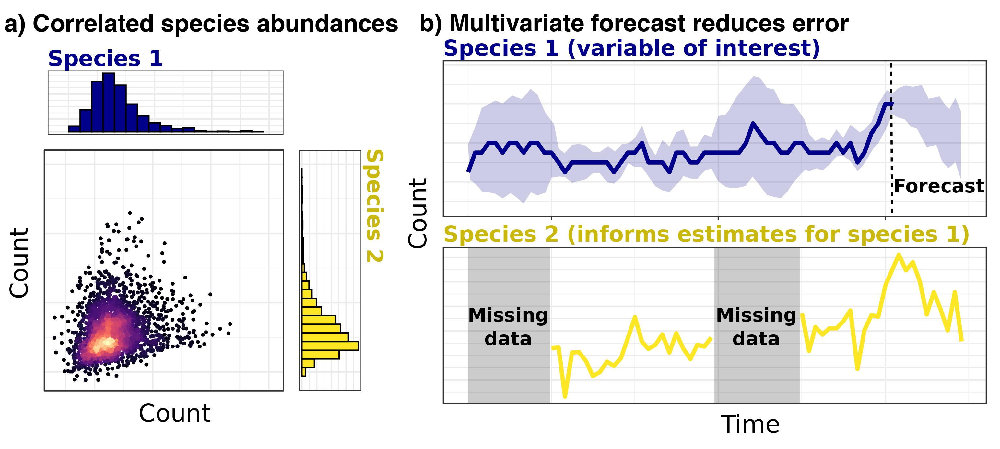
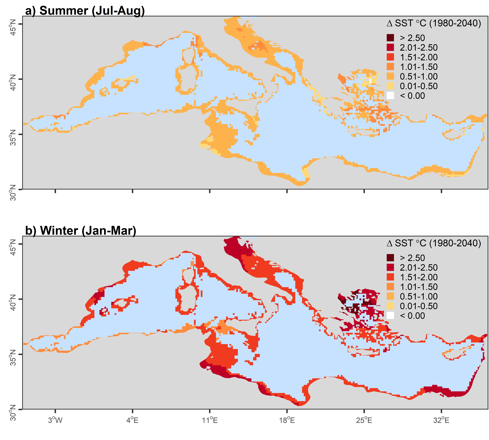

Multivariate ecological modelling
Multivariate ecological models

Why are multivariate ecological models necessary?
Conditional Random Fields models
Conditional Random Fields (CRF) models use species’ occurrences or abundances as outcome variables and allow variance to be partitioned among both abiotic and biotic effects. Some major advantages of these models are that they can:
Produce directly interpretable coefficients that allow users to determine the relative importances (i.e. effect sizes) of biotic associations and environmental covariates in driving abundances or occurrence probabilities
Identify association strengths, rather than simply determining whether they are “significantly different from zero”
Estimate how associations are predicted to change across environmental gradients.

Leveraging co-occurrence associations to predict biodiversity responses to climate change


SpatialEpiLab’s involvement
1. How do associations among co-occurring species change across environmental gradients, and how do these associations influence community assembly?
2. Can co-infection information be leveraged to generate more accurate and informative parasite infection risk models?
3. Are multivariate text-based models able to identify latent infection exposure demographic groups using patient response questionnaires?
Team members on the project
Nicholas Clark
Francisca Powell
KANK Karunarathna
Publications
Clark, NJ, Tozer, S, Wood, C, Firestone, SM, Stevenson, M, Caraguel, C, Chaber, AL, Heller, J and Soares Magalhães, RJ. 2020. Unravelling animal exposure profiles of human Q fever cases in Queensland, Australia using natural language processing. Transboundary and Emerging Diseases. DOI: https://doi.org/10.1111/tbed.13565.
Clark, NJ, Owada, K, Ruberanziza, E, Ortu, G, Umulisa, I, Bayisenge, U, Mbonigaba, JB, Mucaca, JB, Lancaster, W, Fenwick, A, Soares Magalhaes, RJ and Mbituyumuremyi, A. 2020. Parasite associations predict infection risk: incorporating co-infections in predictive models for neglected tropical diseases. Parasites & Vectors 13:1-16.
Clark, NJ, Kerry, JT and Fraser, CI. 2020. Rapid winter warming could disrupt coastal marine fish community structure. Nature Climate Change. DOI: 10.1038/s41558-41020-40838-41555.
Clark, NJ and Wells, K. 2023. Dynamic generalised additive models (DGAMs) for forecasting discrete ecological time series. Methods in Ecology and Evolution 14(3):771-784.
Fountain‐Jones, NM, Clark, NJ, Kinsley, AC, Carstensen, M, Forester, J, Johnson, TJ, Miller, E, Moore, S, Wolf, TM and Craft, ME. 2019. Microbial associations and spatial proximity predict North American moose (Alces alces) gastrointestinal community composition. Journal of Animal Ecology 89:817-828.
Karunarathna, KANK, Wells, K, and Clark, NJ. Modelling nonlinear responses of a desert rodent species to environmental change with hierarchical dynamic generalized additive models. Ecological Modelling 490 (2024): 110648.
Peel, AJ, Wells, K, Giles, J, Boyd, V, Burroughs, A, Edson, D, Crameri, G, Baker, ML, Field, H, Wang, LF, McCallum, H, Plowright, RK and Clark, NJ. 2019. Synchronous shedding of multiple bat paramyxoviruses coincides with peak periods of Hendra virus spillover. Emerging Microbes & Infections 8:1314-1323.
Powell‐Romero, F, Fountain‐Jones, NM, Norberg, A, and Clark, NJ. Improving the predictability and interpretability of co‐occurrence modelling through feature‐based joint species distribution ensembles. Methods in Ecology and Evolution 14.1 (2023): 146-161.